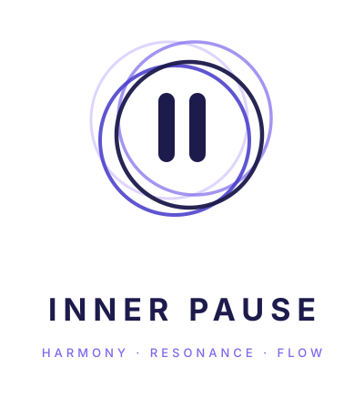
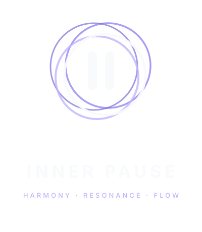

Concept 3 — The Harmony Form. All images below are the actual generated files in public/branding/, unmodified — this page only arranges and displays them. For founder visual approval; not part of the application.
innerpause-logo.svg (light) / innerpause-logo-dark.svg (dark)


innerpause-mark.svg (light) / innerpause-mark-dark.svg (dark)
innerpause-wordmark.svg (light) / innerpause-wordmark-dark.svg (dark) — added post-approval to close the gap first flagged in this proof; same design, cream fill instead of navy.
innerpause-pause-action.svg — self-contained violet badge, shown here on all three backgrounds to confirm it holds up regardless of surrounding context.
The same mark, each color variant shown against all three backgrounds — including the "wrong" pairings, so it's easy to see why each variant is paired the way BRAND_IDENTITY.md §2.2 specifies.
innerpause-icon.svg carries its own navy rounded-square background — shown here against all three page backgrounds to check how the icon square sits against different surrounding contexts. innerpause-icon-512.png (rasterized export) shown alongside for fidelity comparison.
Standalone mark rendered at exact pixel sizes to check the "minimum 24px, favicon-simplified to 16px" claim in BRAND_IDENTITY.md §6.4. The 16px row also includes the purpose-built favicon.svg (two rings, not four) for direct comparison against the full mark at the same size.
48px
32px
24px — documented minimum for the full four-ring mark
16px — full mark (below documented minimum) vs. the purpose-built favicon
Mock bottom navigation bar for scale reference only — the four destination placeholders are plain dots/labels, not final iconography. Center action shown at an approximate 60px diameter on a ~76px nav bar; no exact size is locked anywhere yet (DESIGN_SYSTEM.md does not fix one), so treat this as a founder-review estimate, not a spec.